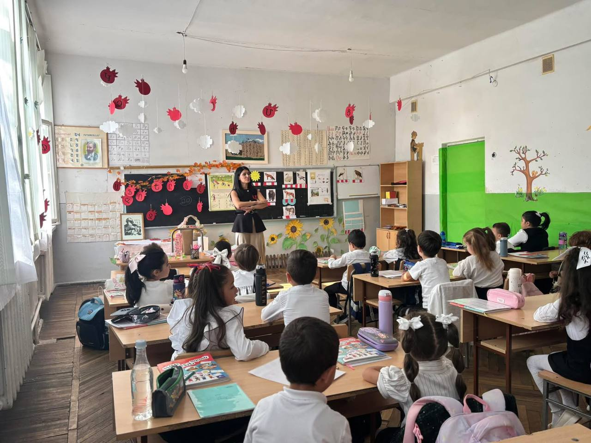
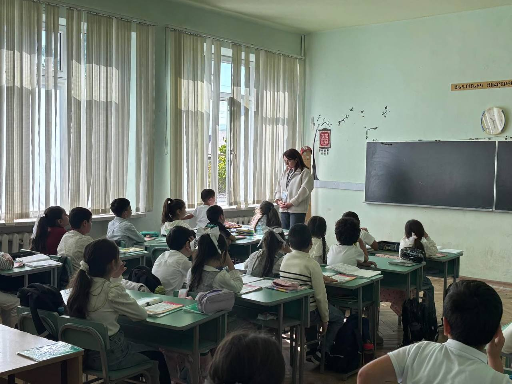

Մեր մասին
🎯 Շուրջայլ տեղեկություններ
- Դպրոցը ունի հրապարակված նյութեր՝ ներքին գնահատումների, տարեկան աշխատանքային պլանների։
- Մասնավորապես, նշված է, որ 2023-2024 ու 2024-2025 ուսումնական տարիների համար «Ներքին գնահատում» և «Տարեկան աշխատանքային պլան» նյութեր են տեղադրվել։
- 2024 թ․ Նոյեմբերին մի հայտարարություն է եղել՝ վարչատնտեսական մասի համակարգողի թափուր պաշտոնի համար։
✅ Լավ կողմերը
- Տվյալները հասանելի են հրապարակային աղբյուրներով (սայթերում, դիմումներում) → ցույց է տալիս, որ դպրոցը փաստացի գործում է և ունի գրանցում։
- Աշխատանքային պլանների եւ ներքին գնահատումների առկայությունը + նախաձեռնությունների առկայությունը են տալիս լավ ազդակ, որ դպրոցը ակտիվ է։
- Տեղեկությունները՝ տնօրեն, զբաղեցրած հասցե, կոնտակտային հեռախոս, լուսավորված են → հնարավոր է ուղղակիորեն կապ հաստատել։


⚠️ Կարելի է ուշադրության կենտրոնում ունենալ
- Չկան հեշտությամբ մատչելի հրապարակումներ՝ մասնավորապես դպրոցի շենքի վիճակի, ուսուցողական տարբեր ծրագրերի զարգացման մասին։
- Աշակերտների թիվը կամ կարգերի թվաքանակը ըստ վերջին տվյալների հստակ չեն ներկայացված։
- Եթե դու հետաքրքրված ես՝ ուսուցողական տեխնոլոգիաներով, խմբակային կյանքով, շենքի վերականգնվածությամբ — այսպիսի տվյալները դեռ կարող են լրացվել։